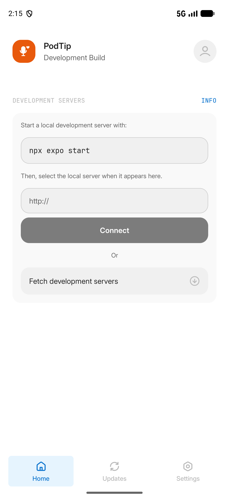
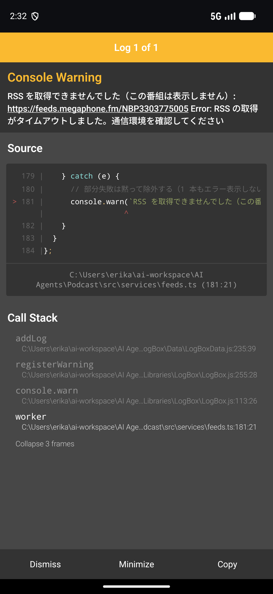
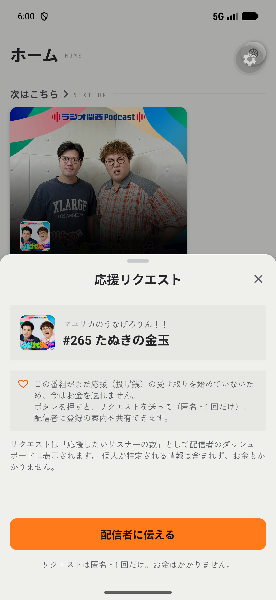

Android 版・公開に向けて準備中
聴いたその回に、
“ありがとう”を届けられる。
PodTip は、好きなポッドキャストを聴いて、心に残った回に ♡ で応援を届けられるアプリです。 現在は Google Play での公開に向けて準備を進めています。
12:34
32:00
♡ を押すと、いま聴いている位置に「ありがとう」が届きます（ページ内のお試しです）
できること
リスナーの方へ
- 番組を探して、聴く — Apple Podcasts に登録された番組を検索・フォロー。続きから再生、次に再生（キュー）、スリープタイマー、速度変更にも対応します
- 気に入った回に ♡ 応援リクエスト — 「応援したい」の気持ちを、お金を払わずに送れます（匿名・1 番組につき 1 回）
- 「この瞬間に応援」 — ♡ を押したときの聴いている位置（例: 12:34）も添えて届くので、「このお話が好きでした」が伝わります
配信者の方へ
- 応援リクエストが見えるダッシュボード — リスナーから ♡ 応援リクエストが何件届いたかを確認できます
- 簡単な本人確認 — 番組の説明欄に確認コードを一時的に貼るだけで「確認済み」バッジが付きます（書類は不要）
リスナー用の機能はアカウント登録なしで使えます（データは端末の中にだけ保存されます）。 音声は配信元のサーバーから直接届くため、アプリが保存・再配信することはありません。
アプリの画面
-

ホーム — 「次はこちら」から前回の続きを聴く -

再生画面 — 番組の色になった画面で聴く -

応援 — ♡ で気持ちを送る（画像は更新予定です）
応援（投げ銭）について
ポッドキャストを配信している方は、アプリの中から配信者用の画面に登録すると、 リスナーからの ♡ 応援リクエストを番組ごとに受け取れます（登録も無料です）。
よくある質問
アプリはどこで入手できますか？
Google Play での公開に向けて準備中です。公開できたらこのページでお知らせします。
お金は本当にかかりませんか？
かかりません。今のところ決済機能がなく、♡ 応援リクエストは無料で送れます。請求も引き落としも発生しません。
音声はスマホに保存されますか？
保存されません。音声は聴いている間だけ、配信元のサーバーから直接届きます。端末の容量を圧迫しません。
開発者について
個人で開発しています。日本のインディーポッドキャストが、聴いた人の小さな応援で続いていく仕組みをつくりたくて、PodTip を作りました。 応援してくださるリスナーと配信者が、この実験の一番大きな支えです。